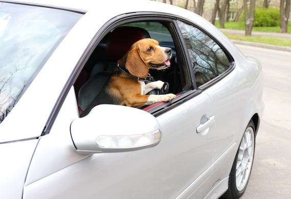
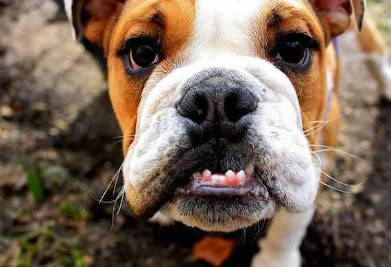
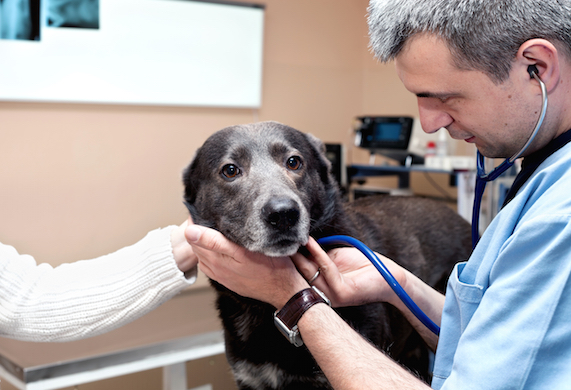

Dedicated dog parents are some of the most incredible people in the world. But even the most caring dog moms and dog dads sometimes do things that just aren’t in the best interests of their four-legged companions. Do you do any of these things?

Leave a Dog Alone in the Car
Even when the weather is relatively cool, a car can quickly become a greenhouse of sorts and cause your dog to become overheated and sick. If left alone for too long, a dog can even die. No matter the weather or season, a dog alone in a car is a target for thieves. Dogs should never be left alone in an unattended vehicle.
Make a Dog Live on a Chain
Yes, all dogs should have access to the outdoors. Yes, if you don’t have access to a fenced yard it is sometimes perfectly fine to tether a dog outside for a period of time as long as the weather is good and the dog is supervised. But dogs should never be forced to live their lives on a chain. Dogs need human interaction and stimulation, to be part of a family, and a measure of freedom. Being left out on a chain while the rest of your family is together indoors is simply cruel.

Neglect Your Dog's Teeth
The American Veterinary Medical Association's (AVMA) president, Dr. Ted Cohn, has stated that although daily tooth brushing is advised for dogs and cats, only 2 percent of dog owners follow through. In addition, 65 percent of dogs with stage one periodontal disease often go untreated. Always have a veterinarian check your dog’s teeth at least once a year and prior to starting any home-based dental regimen. Get into the habit of regular dental care. A child’s toothbrush is best for newcomers and dogs with smaller mouths. A fingertip toothbrush is also acceptable for starters. Never use human toothpaste on a dog. Why? They can’t spit, and there are ingredients in many human toothpastes that can make a dog sick.
Hit a Dog
Putting your hand(s) on a dog as a form of punishment is wrong. It will harm your relationship with your dog and prevent proper training.
In her book, It’s Me or the Dog, Victoria Stilwell, famed positive reinforcement trainer and star of her own dog behavior show on Animal Planet, writes, “When you hit a dog, you teach him to fear you, break his trust, and you weaken his confidence. Insecure dogs are the ones who are more likely to lash out in an aggressive display.”
Assume Your Dog Doesn't Have Feelings
Dogs feel—they have emotions and they understand emotions. Recent scientific studies have shown that dogs experience love like humans and can read human emotions based on facial expressions. Dogs have the capacity to love, feel, become depressed, and get excited. Berating a dog or purposely upsetting him harms the dog and your relationship with him.

Skip Veterinary Visits
This may sound like a “no brainer” but there are some people who believe they can self-diagnose their dog’s health problems online and not seek veterinary care. There is a time and a place for online research or to look up additional medical information for a beloved pet. But if a dog acts out of the ordinary or there are any symptoms of poor health, seeking veterinary care is of utmost importance. Never take medical matters into your own hands.
Use a Crate for the Wrong Reasons
Unlike children, time outs don’t work for dogs. If a dog is misbehaving, putting him in a kennel is the wrong response. When you use the crate as a form of punishment, you are teaching your dog that the kennel is a bad place instead of a safe haven. You want being crated to be a positive experience for your dog, so never use it to scold or punish him.